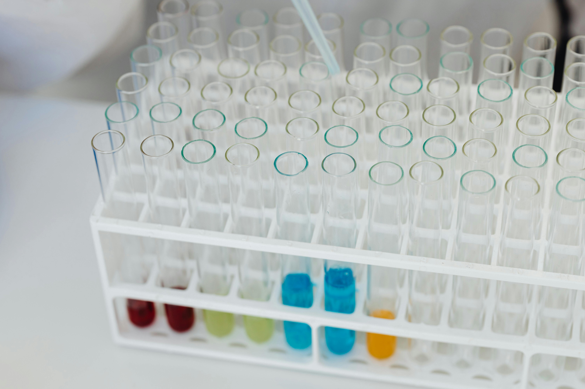
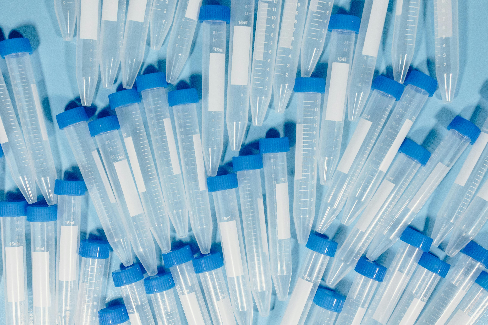
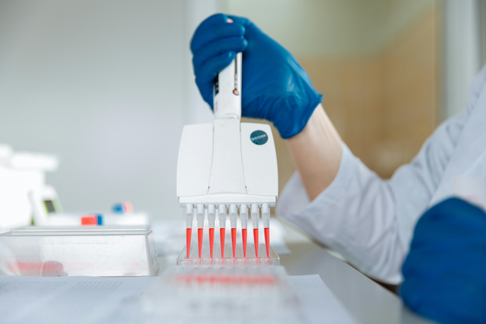
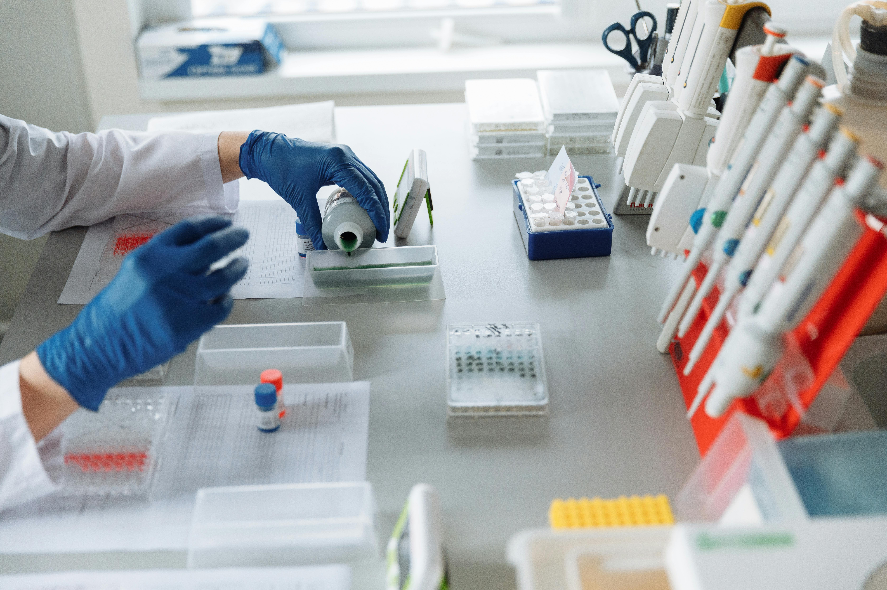

Tube rack view
Magnetic-bead DNA extraction

Tissue
Blood
Cultured cells
KodaPure supports routine research DNA extraction from tissue, whole blood, buffy coat, and cultured cells with a tube-based magnetic-bead workflow built for day-to-day bench handling and downstream QC review.

These views show the tube rack, reagent layout, and bench handling context used during manual extraction review.

Shows the tubes and consumables a lab reviews before lysis, binding, wash, and elution steps begin.

Shows the operator workflow labs compare when they review manual timing and day-to-day handling.

Shows the kind of bench handling labs review when they compare manual preparation timing and operator workflow.
Representative specification ranges are shown below for review planning. Workflow timing is for 12 simultaneous manual preparations processed in batch. Final values, storage conditions, and SKU details should be confirmed in the technical sheet and lot documents.
| Specification | Representative value |
|---|---|
| Sample types | Fresh or frozen tissue up to 25 mg, whole blood up to 200 µL, buffy coat, cultured cells up to 5 × 106 |
| Expected DNA yield | Typically 5-30 µg from tissue and 3-15 µg from blood, depending on sample quality and input amount |
| Elution volume | Adjustable from 50-200 µL |
| A260/A280 | Typically 1.8-2.0 |
| A260/A230 | Typically above 1.7 |
| Processing time | About 45-60 minutes for 12 manual preparations |
| Format | 1.5 mL and 2 mL tube-based magnetic separation workflow |
| Storage | Most buffers at room temperature with selected reagents at 4 °C; full storage conditions are confirmed in the technical sheet |
| Downstream compatibility | PCR, qPCR, ddPCR, NGS library preparation, Sanger sequencing, Southern blot, and methylation workflows after QC review |
Use these reference packs when you need a quote or internal procurement review.
Labs already comparing Qiagen, Zymo, Thermo Fisher, and other familiar suppliers usually want one simple answer first: why is this worth a trial alongside the larger catalogue options?
KodaPure is built for teams that still want to watch the magnetic-bead workflow step by step instead of moving immediately into a fully instrument-tied process.
Small evaluation and larger review packs make it easier to run a controlled trial before the lab commits to a broader supplier switch.
Buyers can open the safety file immediately and move into a structured quote request instead of starting with a generic catalogue checkout or a blind email thread.
KreatBio handles sample fit, document requests, and early procurement review through direct discussion rather than a one-size-fits-all e-commerce checkout.
Cells and tissue are lysed so DNA is released into solution.
Magnetic beads capture DNA while contaminants remain in the liquid phase.
A magnet pulls the bead-bound DNA to the tube wall while wash buffers clear carryover.
Elution buffer releases purified DNA into a clean tube for downstream use.
Use this as a screening guide during evaluation. Final compatibility claims should be confirmed in validation data and lot-specific documentation.
| Sample type | PCR / qPCR | ddPCR | NGS | Sanger | Southern blot | Methylation analysis |
|---|---|---|---|---|---|---|
| Fresh or frozen tissue | Tested | Tested | Tested | Tested | Tested | QC review |
| Whole blood / buffy coat | Tested | Tested | Tested | Tested | Review | QC review |
| Cultured cells | Tested | Tested | Tested | Tested | Review | QC review |
Legend: Tested means the workflow has been used with representative internal samples. Review means case-by-case discussion is recommended before use. QC review means compatibility depends on downstream quality thresholds and sample condition.
Used for sample disruption, DNA release, and the binding step before magnetic separation begins.
Supports DNA capture and the magnet-based separation step that clears the liquid phase during cleanup.
Used to clean the bound DNA and recover eluates in an adjustable 50-200 µL final volume.
Covers the manual step order, expected timing, and the documents used during technical and procurement review.
For routine amplification workflows after normal DNA concentration and purity checks.
For research library-preparation review where extracted DNA is screened before sequencing workflow setup.
For targeted sequencing workflows that need clean genomic DNA from a manual extraction route.
For practical lab teaching where the full magnetic-bead sequence needs to remain visible to learners.
FFPE should be reviewed case by case during technical evaluation. The current public workflow covers fresh or frozen tissue, whole blood, buffy coat, and cultured cells.
Representative public ranges cover tissue up to 25 mg, whole blood up to 200 µL, buffy coat, and cultured cells up to 5 × 106.
The public workflow is a manual tube-based method. Higher-throughput planning should be reviewed during procurement so sample volume, staffing, and document needs are clear up front.
Methylation and other specialized downstream workflows should be reviewed after sample QC because fragment quality and cleanup targets matter.
The quick protocol and public SDS handling copy are direct downloads. The technical sheet and lot-specific CoA are handled through the request form.
A KodaPure quote request should include institution name, sample type, and order quantity. KreatBio replies within 12 hours.
Technical sheet requests cover sample fit and handling detail. Quote requests cover pack size, pricing, and shipping.